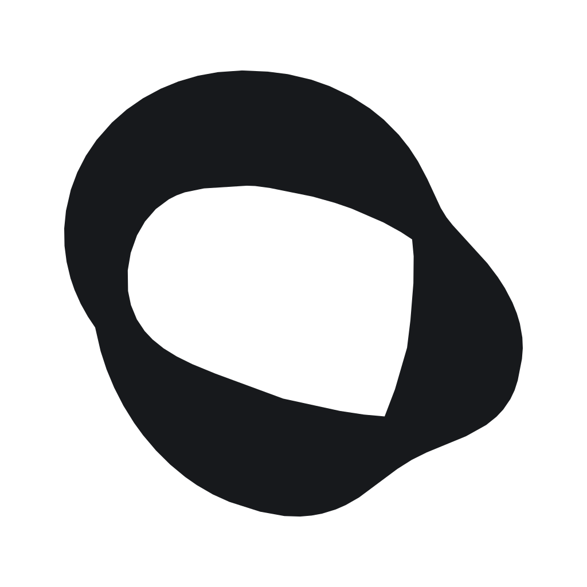

<!doctype html><html><meta charset="utf-8"><style>*{box-sizing:border-box}body{margin:0;background:#f4f3ef;color:#17191c;font-family:Arial,sans-serif}header{padding:52px 64px 26px;display:flex;justify-content:space-between;font-size:11px;letter-spacing:2px}main{display:grid;grid-template-columns:1fr 1fr;margin:20px 64px 0;gap:20px}.panel{height:480px;display:grid;place-items:center;border:1px solid #dfded8;border-radius:12px}img{width:360px;height:360px}.dark{background:#17191c;border-color:#17191c}footer{padding:32px 64px;display:flex;justify-content:space-between;align-items:center}.small{display:flex;align-items:center;gap:28px}.small img{width:32px;height:32px}.small img:nth-child(2){width:48px;height:48px}.small img:nth-child(3){width:64px;height:64px}.caption{font-size:10px;letter-spacing:1.2px;color:#777}h1{font-size:18px;font-weight:500;letter-spacing:4px;margin:0}p{font-size:11px;color:#777}</style><header><span>CRTYSS / FORM STUDY</span><span>01 — TWISTED RIBBON</span></header><main><div class="panel"></div><div class="panel dark"></div></main><footer><div><h1>CRTYSS</h1><p>One continuous form. A clear silhouette.</p></div><div class="small"></div><span class="caption">32 / 48 / 64 PX</span></footer></html>